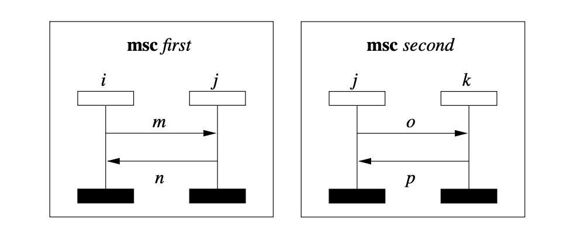
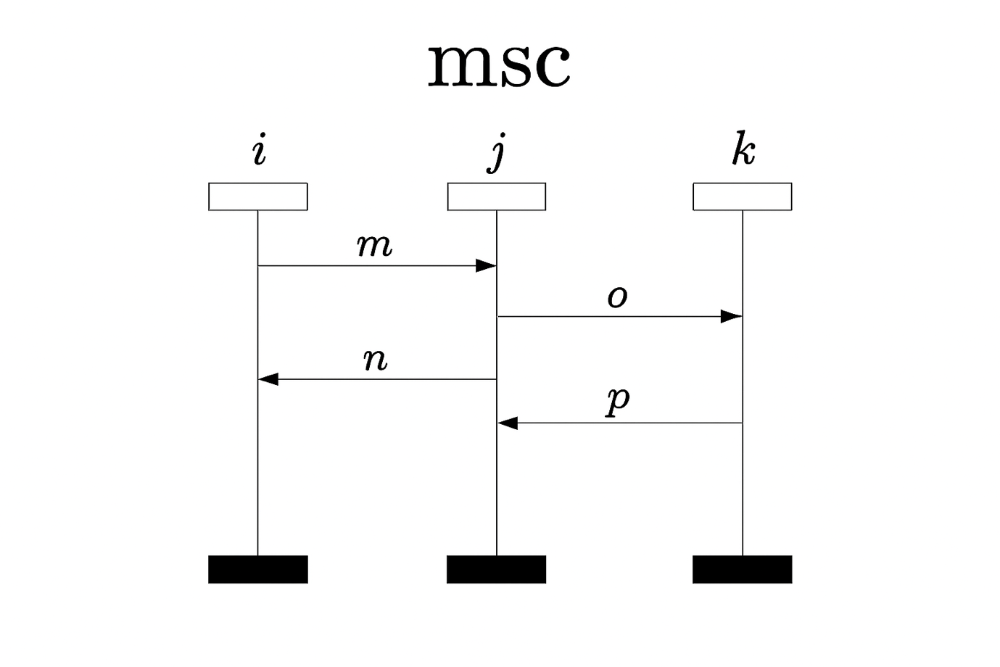
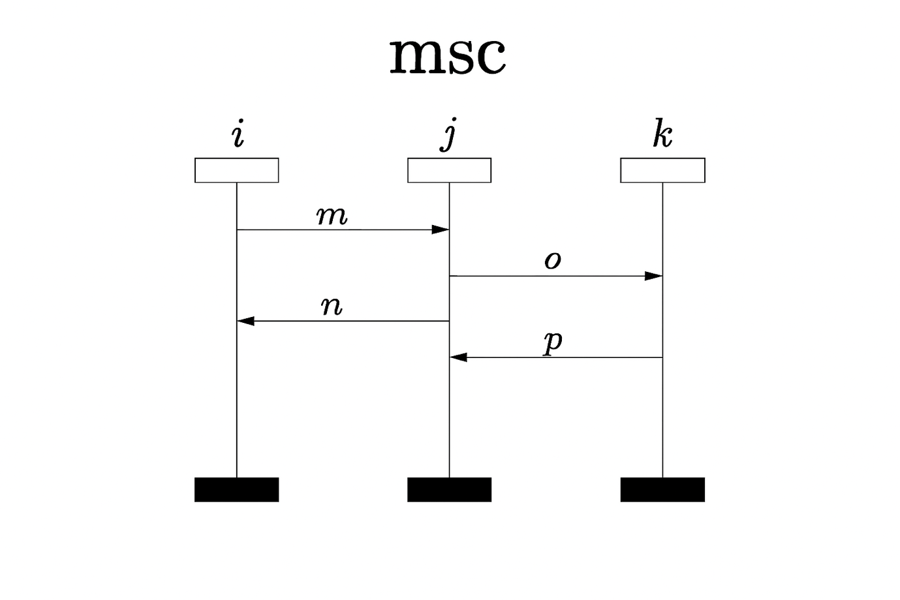

Experiments / GPT-5.4-Thinking Deep / Example 6.docx
Question: Consider the following two message sequence charts labelled "first" and "second"; compose them horizontally and draw the resulting composed message sequence chart.

Answer:

Here is the horizontally composed MSC for your example.
Result of horizontal composition (msc first ‖ msc second)
Instances are the union: i, j, k
All messages from both MSCs are present
No new ordering is introduced between events of the two MSCs
msc first || second
i j k
+-----+ +-----+ +-----+
| | |
|---- m --------->| |
|<--- n ----------| |
| |---- o --------->|
| |<--- p ----------|
| | |
===== ===== =====
Preserved ordering relations
From msc first:
send(m) ≺ recv(m)
send(n) ≺ recv(n)
On instance j: recv(m) ≺ send(n)
From msc second:
send(o) ≺ recv(o)
send(p) ≺ recv(p)
On instance j: send(o) ≺ recv(p)
Important consequence
There is no ordering constraint between:
m/n and o/p, except those already imposed locally on j
If you want, I can next:
derive the partial order formally, or
list possible linearizations (traces) of this MSC.
Question: What is the order between sending m and receiving p in the composed diagram.
Answer:
In the horizontal composition msc first ∥ msc second, there is no additional ordering introduced between events that come from different component MSCs.
send(m)is an event from msc first (on instance i).
recv(p)is an event from msc second (on instance j).
Since horizontal composition preserves only the internal causal orders of each MSC and does not relate events across the two MSCs, we get:
$$\text{send}(m)\text{\:\,} \parallel \text{\:\,recv}(p) $$
Conclusion
✅ Sending mand receiving pare unordered (concurrent) in the composed diagram.
Why there’s no causal chain
Within the components you have:
In msc first:
send(m) ≺ recv(m) ≺ send(n) ≺ recv(n)In msc second:
send(o) ≺ recv(o) ≺ send(p) ≺ recv(p)
But there is no rule in horizontal composition that forces, for example,
recv(m)to happen before send(o), or anything similar—so no path exists that would order send(m)relative to recv(p).
If you want, I can also list all implied orders in the composed partial order (and explicitly show which pairs remain concurrent).
Question:
Please consider the original two MSCs labelled "first" and "second", given here again. Please compose them vertically (by putting "first" on top and "second" at the bottom). Please draw the resulting composed diagram.
Answer:

Generating the vertically composed MSC (first ; second) now — with msc first on top (messages m then n) and msc second at the bottom (messages o then p), sharing lifeline j across both parts.
Provide your feedback on BizChat
Question:
What is the order between receiving n and receiving p in the vertically-composed MSC.
Answer:
In the vertically composed MSC
$$\text{first\:\,};\text{\:\,second}, $$
every event in msc first is ordered before every event in msc second.
Identify the two events
Receiving n happens in msc first (it is the reception of message n on instance i).
Receiving p happens in msc second (it is the reception of message p on instance j).
Order in the vertical composition
Because vertical composition imposes a global “finish first, then start second” constraint:
$$recv(n)\text{\:\,} \prec \text{\:\,}recv(p) $$
✅ Answer: Receiving n happens before receiving p in the vertically composed MSC.
(Extra intuition)
Even though the two receives occur on different lifelines (i for recv(n) and j for recv(p)), the sequential stacking of first above second forces all events in the top chart to precede all events in the bottom chart.